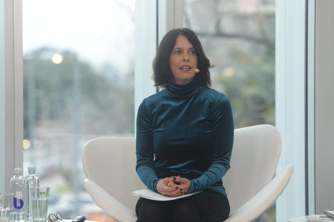

En esta 52edición de las JAIIO contamos con las siguientes charlas plenarias:
-
Lunes 4 de Septiembre de 2023 a las 17 hs.
"Aprendizajes y desafíos para la enseñanza de las Ciencias de la Computación en las escuelas"
|  |
Mara Borchardt
|
La Iniciativa Program.AR de la Fundación Sadosky impulsa la inclusión de las Ciencias de la Computación en los niveles obligatorios de la educación formal en la Argentina desde el 2013. A 10 años del inicio del proyecto se realizará un recorrido por las lecciones aprendidas gracias al trabajo en conjunto con universidades públicas, institutos de formación docente y ministerios de las 24 provincias argentinas, y por las líneas de acción desplegadas en todo el territorio nacional brindando talleres en escuelas de nivel secundario para alentar los estudios superiores en Informática, ofreciendo formaciones docentes en Didáctica de las Ciencias de la Computación, acompañando la actualización de los currículos de los niveles inicial, primario, secundario y superior, creando y distribuyendo manuales sobre la Enseñanza de las Ciencias de la Computación y desarrollando plataformas para el aprendizaje asistido y autónomo de la programación y la difusión de las carreras informáticas existentes en todo el país.
Bio:Mara Borchardt es directora de la Iniciativa Program.AR de la Fundación Sadosky. La misma es una entidad público privada argentina, dependiente del Ministerio de Ciencia, Tecnología e Innovación de la Nación y de las cámaras argentinas del software. Es politóloga, especialista en políticas públicas, egresada de la Facultad de Ciencias Sociales de la Universidad de Buenos Aires, Argentina. Cuenta con una especialización en gestión de la Universidad Dauphine de París, Francia. Y en los últimos 12 años ha trabajado liderando programas de educación y tecnología para instituciones públicas y privadas.
-
Martes 5 de Septiembre a las 17 hs.
"Mujeres en Desarrollos Tecnológicos"
|
||||||
El cambio de paradigma ya es una realidad, y cada vez son más las mujeres que lideran nuevos proyectos de base tecnológica, lo que hace unos años atrás era casi una utopía.
Esta nueva realidad en la que ingresamos en terrenos que durante muchos años estuvieron otorgados al mundo masculino, nos abre nuevas oportunidades para potenciar el mercado y la industria.
En este panel, las expositoras nos contarán sus iniciativas y soluciones a diferentes problemas, apuntado a diferentes públicos, y cómo lograron profesionalizar sus propuestas para seguir creciendo en sus emprendimientos.
Bio:
Gabriela Gayarre: Como fundadora y directora ejecutiva de Teengo, una innovadora startup de tecnología educativa, tiene más de 25 años de experiencia en administración de empresas, finanzas y tecnología, con una sólida trayectoria liderando equipos de alto rendimiento e impulsando el crecimiento estratégico. Fundó Teengo con la visión de revolucionar la educación financiera para la próxima generación en América Latina, capacitando a los adolescentes para que administren eficazmente sus finanzas personales a través de una solución integral similar a una fintech.
Actualmente es la CEO de Aires City.
Pia Torres: Es Ingeniera Electrónica de formación, con postgrados en management, innovación y liderazgo, y con sólida experiencia en Procesos de Transformación, Mejora Continua y Gestión de Proyectos. Tiene expertise en proyectos de automatización, estadarización de procesos, ampliación de capacidad, optimización de producción, mantenimiento, etc. en diversas industrias: Food&Beverage, Oil&Gas, Nuclear, Energy, Energy Efficiency, Renewables, IT, IOT, etc.
Es fundadora & CEO de Roboteam, un programa gratuito llevado adelante por un equipo de voluntarios con el objetivo de reducir la brecha digital y de género y promover interés en disciplinas STEM (Science, Technology, Engineering & Maths) en niñas, niños y adolescentes, fomentando la integración, la diversidad, y la sustentabilidad.
Florencia Nicolet: Tiene más de 30 años de experiencia trabajando en la Industria de las Tecnologías de la Información. Es amante de la industria 4.0 y su mindset. Aprende y hackea sus propios modelos mentarles y ayuda a que otros lo hagan. Creadora y CEO de SeniorITty, un programa de reconversión laboral para preparar a Profesionales Senior para reinventarse y reinsertarse en el mundo del trabajo futuro (que ya es hoy).
-
Miércoles 6 de Septiembre a las 17hs.
"Big Mate: una pizca de matemática detrás de la revolución de los datos"
Pablo Groissman(UBA)
|
Bio:Pablo Groissman es doctor en Matemática. Contribuyó a crear y hoy dirige la Licenciatura en Ciencias de Datos de la UBA, además de desarrollarse como investigador en el CONICET y profesor en la New York University at Shanghai
Se ha vuelto una celebridad en Twitter divulgando conocimiento en forma de hilos donde expone interesantes teoremas matemáticos, que ahora convirtió en un libro.
-
Jueves 7 de Septiembre a las 17 hs.
"Desafíos de la IA en la industria del Software"
|
|
||
|
Bio: Daniel Yankelevich es informático, licenciado en la Escuela Superior Latinoamericana de Informática (ESLAI) en Argentina y recibió su doctorado en la Universidad de Pisa. Además, realizó un postdoctorado en Carolina del Norte (EE. UU.) y fue docente e investigador en diversas universidades del país. Director de Fundar, Daniel es también experto en inteligencia artificial.
Fernando Das Neves recibió su PhD en Computer Science and Applications del Virginia Polytechnic Institute and State University en 2004. Es gerente de Investigación y Desarrollo de Snoop Consulting. Tiene experiencia en aplicar nuevas ideas de investigación a proyectos innovadores, llevándolos desde la idea hasta la prueba de concepto y hasta el producto. Ha trabajado desde minería de datos, minería de textos y la extracción de información a problemas concretos y desarrolló software escalable para resolver esos problemas. Tiene experiencia tanto en el abordaje de problemas de investigación como en el desarrollo de arquitecturas de software para implementarlos. Ha creado una agenda de investigación para empresas de software del sector privado.